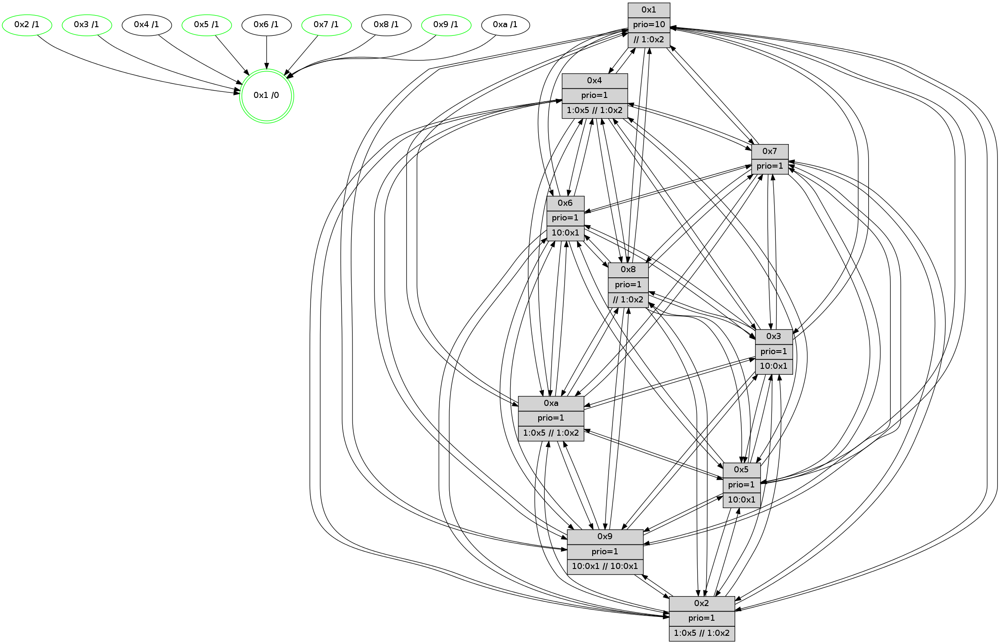

>> << IDX [start] -100 -25 -5 +0 +5 +25 +100 [705.017687082]
 Previous packets
----------------------------------------------------------------------
700.288901 beacon01(faad) #0 coord=01,02,03,04,05,06,07,0a,09,08 cycle=688.0ms assoc
-- color-indic=1 64 b0 55
700.298883 beacon02(faad) #0 coord=01,02,03,04,05,06,07,0a,09,08 cycle=688.0ms assoc 64 23 64
700.308882 beacon03(faad) #0 coord=01,02,03,04,05,06,07,0a,09,08 cycle=688.0ms assoc 64 59 29
700.318883 beacon04(faad) #0 coord=01,02,03,04,05,06,07,0a,09,08 cycle=688.0ms assoc 64 2e c3
700.328885 beacon05(faad) #0 coord=01,02,03,04,05,06,07,0a,09,08 cycle=688.0ms assoc 64 54 8e
700.338883 beacon06(faad) #0 coord=01,02,03,04,05,06,07,0a,09,08 cycle=688.0ms assoc 64 da 59
700.348885 beacon07(faad) #0 coord=01,02,03,04,05,06,07,0a,09,08 cycle=688.0ms assoc 64 a0 14
700.358889 beacon0a(faad) #0 coord=01,02,03,04,05,06,07,0a,09,08 cycle=688.0ms assoc 64 d1 1f
700.368888 beacon09(faad) #0 coord=01,02,03,04,05,06,07,0a,09,08 cycle=688.0ms assoc 64 5f c8
700.378888 beacon08(faad) #0 coord=01,02,03,04,05,06,07,0a,09,08 cycle=688.0ms assoc 64 25 85
700.390056 [Hello(6): seq=449 sym=2,3,5,4,7,9,8,10,1 sysInfo= stat=2:2,5,14,7/3:13,14,5,6/5:12,5,5,9/4:13,4,5,0/7:5,1,3,1/9:15,5,7,6/8:10,15,6,5/10:2,7,13,6/1:11,9,1,1]
700.393491 [Hello(1): seq=358 sym=4,2,9,5,10,3,8,6,7 sysInfo=coloring-mode-on,ColoringModeRequestCalled stat=4:1,1,4,0/2:13,5,12,8/9:0,11,5,0/5:12,4,4,0/10:3,15,11,7/3:15,12,1,10/8:2,15,15,6/6:1,10,11,6/7:0,13,2,8]
700.397357 [Hello(4): seq=449 sym=5,7,6,2,3,9,8,10,1 sysInfo= stat=5:13,6,3,7/7:7,15,6,2/6:0,5,7,7/2:3,7,2,7/3:7,5,13,4/9:11,14,2,3/8:2,11,4,7/10:9,9,7,6/1:11,1,5,1]
700.402456 [Hello(3): seq=449 sym=1,7,6,2,4,8,9,10,5 sysInfo= stat=1:4,9,6,1/7:4,0,3,2/6:8,9,15,7/2:9,15,4,8/4:2,0,3,4/8:0,4,2,2/9:5,8,9,6/10:10,8,6,5/5:1,15,4,7]
700.406190 [Hello(7): seq=449 sym=2,3,5,6,4,8,9,10,1 sysInfo=hasWarning stat=2:11,2,12,9/3:11,14,7,8/5:10,6,7,11/6:0,9,5,2/4:6,9,2,0/8:14,5,10,4/9:14,15,9,8/10:4,5,11,7/1:4,5,6,1]
----------------------------------------------------------------------
701.077032 beacon01(faad) #0 coord=01,02,03,04,05,06,07,0a,09,08 cycle=688.0ms assoc
-- color-indic=1 64 0c 50
701.087015 beacon02(faad) #0 coord=01,02,03,04,05,06,07,0a,09,08 cycle=688.0ms assoc 64 9f 61
701.097014 beacon03(faad) #0 coord=01,02,03,04,05,06,07,0a,09,08 cycle=688.0ms assoc 64 e5 2c
701.107013 beacon04(faad) #0 coord=01,02,03,04,05,06,07,0a,09,08 cycle=688.0ms assoc 64 92 c6
701.117014 beacon05(faad) #0 coord=01,02,03,04,05,06,07,0a,09,08 cycle=688.0ms assoc 64 e8 8b
701.127016 beacon06(faad) #0 coord=01,02,03,04,05,06,07,0a,09,08 cycle=688.0ms assoc 64 66 5c
701.137018 beacon07(faad) #0 coord=01,02,03,04,05,06,07,0a,09,08 cycle=688.0ms assoc 64 1c 11
701.147019 beacon0a(faad) #0 coord=01,02,03,04,05,06,07,0a,09,08 cycle=688.0ms assoc 64 6d 1a
701.157023 beacon09(faad) #0 coord=01,02,03,04,05,06,07,0a,09,08 cycle=688.0ms assoc 64 e3 cd
701.167020 beacon08(faad) #0 coord=01,02,03,04,05,06,07,0a,09,08 cycle=688.0ms assoc 64 99 80
701.178514 [Hello(8): seq=393 sym=5,2,3,4,7,6,9,10,1 sysInfo=hasWarning stat=5:10,3,6,7/2:3,7,14,2/3:13,3,2,8/4:4,2,5,6/7:12,13,6,6/6:7,4,1,7/9:2,9,7,5/10:4,12,6,6/1:1,14,5,0]
701.181900 [Hello(5): seq=450 sym=7,6,4,3,1,8,10,2 sysInfo=hasWarning stat=7:13,15,8,4/6:13,0,6,6/4:8,10,14,5/3:1,5,15,5/1:14,0,5,1/8:0,6,14,4/10:9,11,5,5/2:5,10,2,0]
701.184884 [Color(1) seq=130 @0:0 prio=10 >>1.@2,1.@3,1.@4]
701.187121 [Color(7) seq=91 @0:0 prio=1]
701.189227 [Color(5) seq=103 @0:0 prio=1 >10.@1,1.@2,1.@3,1.@4]
701.193028 [Hello(9): seq=393 sym=5,2,3,4,7,6,8,10,1 sysInfo=hasWarning stat=5:2,8,0,8/2:4,15,9,5/3:8,8,0,7/4:11,5,0,5/7:0,6,9,4/6:10,11,3,5/8:3,11,9,2/10:4,6,7,7/1:11,12,8,1]
701.195553 [Hello(10): seq=382 sym=6,2,3,8,9,5,7,4,1 sysInfo=hasWarning stat=6:2,2,6,2/2:15,8,13,1/3:6,1,12,4/8:8,4,2,6/9:2,8,0,4/5:0,1,1,8/7:14,12,4,3/4:13,3,12,6/1:14,14,8,1]
701.200458 [Color(9) seq=98 @0:0 prio=1 >10.@1,1.@2,1.@3,1.@5 >>10.@1,1.@2,1.@3]
701.202443 [Hello(2): seq=446 sym=4,5,7,6,3,9,8,10,1 sysInfo=hasWarning stat=4:3,13,1,4/5:0,1,1,0/7:5,11,9,4/6:8,3,5,5/3:9,8,0,2/9:10,11,15,1/8:7,11,13,4/10:13,1,1,4/1:12,12,1,1]
701.206547 [Color(2) seq=95 @0:0 prio=1 >1.@5 >>1.@2,1.@3,1.@4]
----------------------------------------------------------------------
701.865161 beacon01(faad) #0 coord=01,02,03,04,05,06,07,0a,09,08 cycle=688.0ms assoc
-- color-indic=1 64 38 48
701.875144 beacon02(faad) #0 coord=01,02,03,04,05,06,07,0a,09,08 cycle=688.0ms assoc 64 ab 79
701.885144 beacon03(faad) #0 coord=01,02,03,04,05,06,07,0a,09,08 cycle=688.0ms assoc 64 d1 34
701.895144 beacon04(faad) #0 coord=01,02,03,04,05,06,07,0a,09,08 cycle=688.0ms assoc 64 a6 de
701.905144 beacon05(faad) #0 coord=01,02,03,04,05,06,07,0a,09,08 cycle=688.0ms assoc 64 dc 93
701.915144 beacon06(faad) #0 coord=01,02,03,04,05,06,07,0a,09,08 cycle=688.0ms assoc 64 52 44
701.925143 beacon07(faad) #0 coord=01,02,03,04,05,06,07,0a,09,08 cycle=688.0ms assoc 64 28 09
701.935149 beacon0a(faad) #0 coord=01,02,03,04,05,06,07,0a,09,08 cycle=688.0ms assoc 64 59 02
701.945149 beacon09(faad) #0 coord=01,02,03,04,05,06,07,0a,09,08 cycle=688.0ms assoc 64 d7 d5
701.955149 beacon08(faad) #0 coord=01,02,03,04,05,06,07,0a,09,08 cycle=688.0ms assoc 64 ad 98
701.966083 [Hello(1): seq=359 sym=4,2,9,5,10,3,8,6,7 sysInfo=coloring-mode-on,ColoringModeRequestCalled stat=4:2,1,4,0/2:14,6,12,8/9:1,12,5,0/5:12,5,4,0/10:4,15,11,7/3:0,12,1,10/8:3,15,15,6/6:1,10,11,6/7:1,14,2,8]
701.969623 [Hello(3): seq=450 sym=1,7,6,2,4,8,9,10,5 sysInfo= stat=1:4,10,6,1/7:5,1,3,2/6:8,9,15,7/2:10,0,4,8/4:2,0,3,4/8:1,4,2,2/9:6,9,9,6/10:11,8,6,5/5:2,0,4,7]
701.974622 [Hello(7): seq=450 sym=2,3,5,6,4,8,9,10,1 sysInfo=hasWarning stat=2:12,3,12,9/3:11,14,7,8/5:10,7,7,11/6:0,9,5,2/4:6,9,2,0/8:15,5,10,4/9:15,0,9,8/10:5,5,11,7/1:4,5,6,1]
701.980633 [Hello(6): seq=450 sym=2,3,5,4,7,9,8,10,1 sysInfo= stat=2:3,6,14,7/3:14,14,5,6/5:13,6,5,9/4:14,4,5,0/7:6,2,3,1/9:0,6,7,6/8:11,15,6,5/10:3,7,13,6/1:12,10,1,1]
701.988282 [Hello(4): seq=450 sym=5,7,6,2,3,9,8,10,1 sysInfo= stat=5:14,7,3,7/7:8,0,6,2/6:0,5,7,7/2:4,8,2,7/3:8,5,13,4/9:12,15,2,3/8:3,11,4,7/10:10,9,7,6/1:11,2,5,1]
----------------------------------------------------------------------
702.653296 beacon01(faad) #0 coord=01,02,03,04,05,06,07,0a,09,08 cycle=688.0ms assoc
-- color-indic=1 64 84 4d
702.663279 beacon02(faad) #0 coord=01,02,03,04,05,06,07,0a,09,08 cycle=688.0ms assoc 64 17 7c
702.673277 beacon03(faad) #0 coord=01,02,03,04,05,06,07,0a,09,08 cycle=688.0ms assoc 64 6d 31
702.683277 beacon04(faad) #0 coord=01,02,03,04,05,06,07,0a,09,08 cycle=688.0ms assoc 64 1a db
702.693279 beacon05(faad) #0 coord=01,02,03,04,05,06,07,0a,09,08 cycle=688.0ms assoc 64 60 96
702.703280 beacon06(faad) #0 coord=01,02,03,04,05,06,07,0a,09,08 cycle=688.0ms assoc 64 ee 41
702.713281 beacon07(faad) #0 coord=01,02,03,04,05,06,07,0a,09,08 cycle=688.0ms assoc 64 94 0c
702.723283 beacon0a(faad) #0 coord=01,02,03,04,05,06,07,0a,09,08 cycle=688.0ms assoc 64 e5 07
702.733283 beacon09(faad) #0 coord=01,02,03,04,05,06,07,0a,09,08 cycle=688.0ms assoc 64 6b d0
702.743284 beacon08(faad) #0 coord=01,02,03,04,05,06,07,0a,09,08 cycle=688.0ms assoc 64 11 9d
702.755720 [Hello(8): seq=394 sym=5,2,3,4,7,6,9,10,1 sysInfo=hasWarning stat=5:11,4,6,7/2:4,8,14,2/3:14,3,2,8/4:5,2,5,6/7:13,14,6,6/6:8,4,1,7/9:3,10,7,5/10:5,12,6,6/1:2,15,5,0]
702.758450 [STC(1) #0.63 tree-change,inconsistent-stability,stable,to-color d=0]
702.760067 [Color(1) seq=131 @0:0 prio=10 >>1.@2,1.@3,1.@4]
702.763061 [Hello(2): seq=447 sym=4,5,7,6,3,9,8,10,1 sysInfo=hasWarning stat=4:4,13,1,4/5:0,1,1,0/7:6,11,9,4/6:9,3,5,5/3:10,8,0,2/9:10,11,15,1/8:8,11,13,4/10:13,1,1,4/1:13,12,1,1]
702.766248 [Hello(10): seq=383 sym=6,2,3,8,9,5,7,4,1 sysInfo=hasWarning stat=6:3,2,6,2/2:0,9,13,1/3:7,1,12,4/8:8,4,2,6/9:2,9,0,4/5:0,1,1,8/7:15,12,4,3/4:14,3,12,6/1:15,14,8,1]
702.769269 [Hello(5): seq=451 sym=7,6,4,3,1,9,8,10,2 sysInfo=hasWarning stat=7:14,15,8,4/6:14,0,6,6/4:9,10,14,5/3:2,5,15,5/1:15,0,5,1/9:0,1,0,0/8:1,6,14,4/10:10,11,5,5/2:6,11,2,0]
702.772470 [Color(7) seq=92 @0:0 prio=1]
702.774334 [Color(5) seq=104 @0:0 prio=1 >10.@1,1.@2,1.@3,1.@4]
702.776582 [Hello(9): seq=394 sym=5,2,3,4,7,6,8,10,1 sysInfo=hasWarning stat=5:2,8,0,8/2:5,0,9,5/3:9,8,0,7/4:12,5,0,5/7:1,6,9,4/6:11,11,3,5/8:4,11,9,2/10:4,6,7,7/1:12,12,8,1]
702.779735 [Color(9) seq=99 @0:0 prio=1 >10.@1,1.@2,1.@3,1.@5 >>10.@1,1.@2,1.@3]
702.788028 [Color(2) seq=96 @0:0 prio=1 >1.@5 >>1.@2,1.@3,1.@4]
----------------------------------------------------------------------
703.441425 beacon01(faad) #0 coord=01,02,03,04,05,06,07,0a,09,08 cycle=688.0ms assoc
-- color-indic=1 64 40 43
703.451408 beacon02(faad) #0 coord=01,02,03,04,05,06,07,0a,09,08 cycle=688.0ms assoc 64 d3 72
703.461408 beacon03(faad) #0 coord=01,02,03,04,05,06,07,0a,09,08 cycle=688.0ms assoc 64 a9 3f
703.471409 beacon04(faad) #0 coord=01,02,03,04,05,06,07,0a,09,08 cycle=688.0ms assoc 64 de d5
703.481408 beacon05(faad) #0 coord=01,02,03,04,05,06,07,0a,09,08 cycle=688.0ms assoc 64 a4 98
703.491408 beacon06(faad) #0 coord=01,02,03,04,05,06,07,0a,09,08 cycle=688.0ms assoc 64 2a 4f
703.501410 beacon07(faad) #0 coord=01,02,03,04,05,06,07,0a,09,08 cycle=688.0ms assoc 64 50 02
703.511416 beacon0a(faad) #0 coord=01,02,03,04,05,06,07,0a,09,08 cycle=688.0ms assoc 64 21 09
703.521414 beacon09(faad) #0 coord=01,02,03,04,05,06,07,0a,09,08 cycle=688.0ms assoc 64 af de
703.531414 beacon08(faad) #0 coord=01,02,03,04,05,06,07,0a,09,08 cycle=688.0ms assoc 64 d5 93
703.542319 [STC(8)->1 #0.63 tree-change,inconsistent-stability,to-color d=1]
703.543591 [Hello(7): seq=451 sym=2,3,5,6,4,8,9,10,1 sysInfo=hasWarning stat=2:12,4,12,9/3:11,14,7,8/5:10,8,7,11/6:1,9,5,2/4:7,9,2,0/8:0,5,10,4/9:0,1,9,8/10:5,5,11,7/1:4,5,6,1]
703.546791 [Hello(4): seq=451 sym=5,7,6,2,3,9,8,10,1 sysInfo= stat=5:15,8,3,7/7:8,1,6,2/6:0,5,7,7/2:5,9,2,7/3:8,5,13,4/9:13,0,2,3/8:4,11,4,7/10:11,9,7,6/1:11,3,6,1]
703.549347 [Hello(6): seq=451 sym=2,3,5,4,7,9,8,10,1 sysInfo= stat=2:4,7,14,7/3:14,14,5,6/5:14,7,5,9/4:15,4,5,0/7:6,3,3,1/9:1,7,7,6/8:12,15,6,5/10:4,7,13,6/1:12,11,2,1]
703.553332 [Hello(1): seq=360 sym=4,2,9,5,10,3,8,6,7 sysInfo=coloring-mode-on,ColoringModeRequestCalled stat=4:3,1,4,0/2:15,7,12,8/9:2,13,5,0/5:13,6,4,0/10:5,15,11,7/3:1,12,1,10/8:4,15,15,6/6:2,10,11,6/7:2,15,2,8]
703.557791 [Hello(3): seq=451 sym=1,7,6,2,4,8,9,10,5 sysInfo= stat=1:4,11,7,1/7:6,2,3,2/6:9,9,15,7/2:11,1,4,8/4:3,0,3,4/8:2,4,2,2/9:7,10,9,6/10:12,8,6,5/5:3,1,4,7]
703.562849 [STC(3)->1 #0.63 tree-change,inconsistent-stability,stable,to-color d=1]
703.564480 [TreeStatus(3)-.->1 #0.63 tree-change,inconsistent-stability,stable child=1]
----------------------------------------------------------------------
704.229557 beacon01(faad) #0 coord=01,02,03,04,05,06,07,0a,09,08 cycle=688.0ms assoc
-- color-indic=1 64 fc 46
704.239539 beacon02(faad) #0 coord=01,02,03,04,05,06,07,0a,09,08 cycle=688.0ms assoc 64 6f 77
704.249540 beacon03(faad) #0 coord=01,02,03,04,05,06,07,0a,09,08 cycle=688.0ms assoc 64 15 3a
704.259539 beacon04(faad) #0 coord=01,02,03,04,05,06,07,0a,09,08 cycle=688.0ms assoc 64 62 d0
704.269540 beacon05(faad) #0 coord=01,02,03,04,05,06,07,0a,09,08 cycle=688.0ms assoc 64 18 9d
704.279540 beacon06(faad) #0 coord=01,02,03,04,05,06,07,0a,09,08 cycle=688.0ms assoc 64 96 4a
704.289541 beacon07(faad) #0 coord=01,02,03,04,05,06,07,0a,09,08 cycle=688.0ms assoc 64 ec 07
704.299544 beacon0a(faad) #0 coord=01,02,03,04,05,06,07,0a,09,08 cycle=688.0ms assoc 64 9d 0c
704.309545 beacon09(faad) #0 coord=01,02,03,04,05,06,07,0a,09,08 cycle=688.0ms assoc 64 13 db
704.319545 beacon08(faad) #0 coord=01,02,03,04,05,06,07,0a,09,08 cycle=688.0ms assoc 64 69 96
704.331029 [Hello(10): seq=384 sym=6,2,3,8,9,5,7,4,1 sysInfo=hasWarning stat=6:4,2,7,2/2:0,10,13,1/3:8,1,13,5/8:8,4,3,6/9:3,10,0,4/5:1,2,1,8/7:0,13,4,3/4:15,3,12,6/1:0,14,8,1]
704.333751 [Color(1) seq=132 @0:0 prio=10 >>1.@2,1.@3,1.@4]
704.335515 [Hello(9): seq=395 sym=5,2,3,4,7,6,8,10,1 sysInfo=hasWarning stat=5:2,8,0,8/2:5,1,9,5/3:10,8,1,8/4:13,5,1,5/7:2,6,9,4/6:12,11,3,5/8:5,11,10,2/10:4,6,7,7/1:13,12,8,1]
704.338040 [Hello(5): seq=452 sym=7,6,4,3,1,9,8,10,2 sysInfo=hasWarning stat=7:15,15,8,4/6:15,0,6,6/4:10,10,15,5/3:3,5,0,6/1:0,0,5,1/9:1,2,0,0/8:2,6,15,4/10:10,11,5,5/2:6,12,2,0]
704.340737 [Color(9) seq=100 @0:0 prio=1 >10.@1,1.@2,1.@3,1.@5 >>10.@1,1.@2,1.@3]
704.345860 [Color(7) seq=93 @0:0 prio=1]
704.349488 [Hello(8): seq=395 sym=5,2,3,4,7,6,9,10,1 sysInfo=hasWarning stat=5:12,5,6,7/2:5,9,14,2/3:15,3,3,9/4:6,2,5,6/7:14,15,6,6/6:9,4,2,7/9:4,11,7,5/10:6,12,6,6/1:3,0,6,0]
704.354871 [Color(2) seq=97 @0:0 prio=1 >1.@5 >>1.@2,1.@3,1.@4]